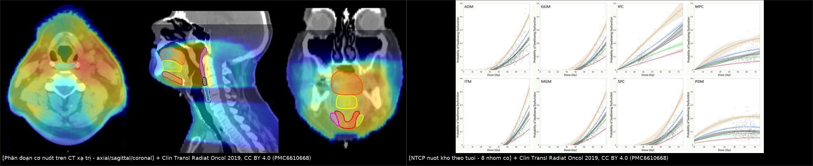
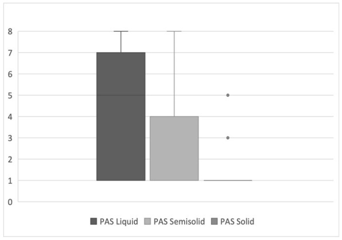
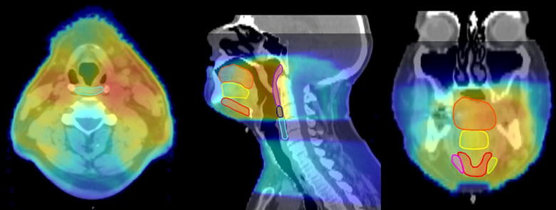
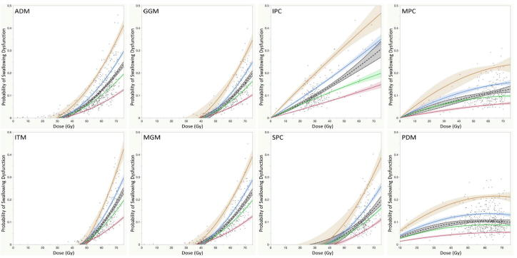

1684 — Nuốt khó sau xạ trị đầu cổ / Radiation-associated dysphagia (late RAD)
Tags: pattern:nuot-kho pattern:sac pattern:xo-hoa pattern:hep-thuc-quan vung:dau-co vung:thanh-quan vung:duong-nuot protocol:VFSS protocol:FEES protocol:lieu-OAR score:DIGEST score:PAS incidentaloma:khong
Mức chắc chắn (certainty): tổng hợp y văn (literature synthesis) — 1 đoàn hệ 300 bệnh nhân ung thư hầu họng xạ điều biến liều (IMRT) với ngưỡng liều theo TUỔI (Clin Transl Radiat Oncol 2019, PMC6610668, CC BY 4.0), 1 đoàn hệ FEES 24 bệnh nhân nuốt khó muộn (Curr Oncol 2025, PMC12025715, CC BY 4.0), 1 nghiên cứu bản đồ liều–vùng (Int J Radiat Oncol Biol Phys 2023, PMC10581448, CC BY 4.0), và số liệu thời điểm khởi phát từ 237 bệnh nhân (Dysphagia 2025, PMC12328464 — bài không ghi giấy phép rõ, chỉ dùng số liệu, không dùng ảnh). Không có ca nguyên văn của nhóm.
Câu chốt: nuốt khó muộn sau xạ đầu cổ là bệnh của LIỀU × TUỔI × THỜI GIAN, không phải "di chứng chung chung". Ba con số phải thuộc: 11% bệnh nhân IMRT hầu họng có nuốt khó mạn (sặc/hẹp ≥ 12 tháng); ngưỡng liều trung bình cơ khít hầu DƯỚI để giữ nguy cơ < 5% là 26 Gy (≤ 49 tuổi) → 17 Gy (50–59) → 10 Gy (60–69) → < 10 Gy (≥ 70); và 69,4% bệnh nhân nuốt khó muộn sặc/hít chất LỎNG, trong khi chất đặc chỉ 8,3% — nên cho ăn đặc trước, đánh giá bằng FEES/VFSS trước khi kết luận "ăn được".
1. Tổng quan bệnh học – cơ chế hình ảnh
1.1 Hai cơ chế khác nhau, hai thời điểm khác nhau
- Cấp (trong xạ, < 3 tháng): viêm niêm mạc + phù → đau, không nuốt được; hồi phục sau xạ. Đây không phải nuốt khó muộn.
- Muộn (≥ 12 tháng): xơ hóa cơ + mất mạch máu + tổn thương thần kinh → cơ khít hầu co cứng, giảm giãn, thanh quản giảm nâng, cơ nhẫn hầu không mở (UES dysfunction); hậu quả là ứ đọng, trào ngược vào đường thở, sặc im lặng, hẹp thực quản cổ. Xơ hóa tiến triển nhiều năm, không hồi phục.
- Cơ chế thứ ba mới được mô tả: liều vào phần dưới hành não (medulla) — nơi có trung tâm nuốt — liên quan độc lập với nuốt khó 1 năm sau xạ; thêm liều vùng này cải thiện mô hình dự báo (p ≤ 0,006) so với chỉ dùng liều cơ khít hầu (PMC10581448). Đây là lý do giảm liều cơ khít hầu đơn thuần không đủ ở một số bệnh nhân.
- Trên hình ảnh: CT/MRI muộn có thể thấy teo cơ khít hầu, mất mặt phẳng mỡ, dày–xơ hóa thành hầu, hẹp lòng thực quản cổ; nhưng chẩn đoán chức năng nằm ở VFSS/FEES, không ở CT. CT có vai trò loại trừ tái phát u/hẹp do u và lập kế hoạch liều.
1.2 Số liệu định lượng phải thuộc
| Đại lượng | Con số | Nguồn |
|---|---|---|
| Nuốt khó mạn (sặc/hẹp ≥ 12 tháng) sau IMRT + hóa trị hầu họng | 11% (34/300) | PMC6610668 |
| Nuốt khó có ý nghĩa lâm sàng sau hóa–xạ quy ước | tới 20%; ~50% bệnh nhân tự báo nuốt khó sau xạ đầu cổ | PMC6610668 / PMC10581448 |
| Thời điểm khởi phát (237 bệnh nhân) | 3,8% ở 6–12 tháng; 5,1% 1–2 năm; 7,1% > 2 năm → 16% khởi phát MUỘN | PMC12328464 |
| Liều thanh quản trung bình | 43,8 ± 14,5 Gy, khác biệt có ý nghĩa giữa các mốc thời gian (p = 0,018) | PMC12328464 |
| Ngưỡng liều theo tuổi, cơ khít hầu dưới (nguy cơ < 5%) | 26 Gy (≤ 49 tuổi) · 17 Gy (50–59) · 10 Gy (60–69) · < 10 Gy (≥ 70) | PMC6610668 |
| Ngưỡng liều theo tuổi, cơ khít hầu giữa | 50 Gy · 23 Gy · 15 Gy · < 10 Gy | PMC6610668 |
| Ngưỡng liều theo tuổi, cơ khít hầu trên | 62 Gy · 54 Gy · 50 Gy · 44 Gy | PMC6610668 |
| Cùng liều 60 Gy vào cơ khít hầu trên | nguy cơ 5% ở tuổi 50–59 nhưng 20% ở tuổi ≥ 70 | PMC6610668 |
| FEES ở nuốt khó muộn (24 bệnh nhân, trung vị 8 năm sau chẩn đoán) | 92% thiếu lực đẩy; 37,5% chậm pha hầu; 25% thiếu bảo vệ; chỉ 1 ca bình thường | PMC12025715 |
| Sặc/hít theo độ đặc | chất lỏng 69,4% · bán đặc 34,3% · đặc 8,3%; sặc im lặng (PAS 8) 5,6% với chất lỏng | PMC12025715 |
| Độ tin cậy FEES giữa 2 người đọc | PAS κ > 0,88; thang ứ đọng Yale κ > 0,83–0,87 | PMC12025715 |
- Đọc con số cho đúng: "11%" là sặc/hẹp/G-tube/viêm phổi hít sặc — tức là đầu băng của tảng băng; nếu chỉ hỏi triệu chứng, tỉ lệ ~50%. Đừng dùng 11% để nói "hiếm".
- Phản biện: bảng ngưỡng theo tuổi của PMC6610668 xây trên 300 bệnh nhân hầu họng, IMRT + hóa trị, mô hình có AUC 0,649–0,751 — tức dự báo trung bình, chưa được ngoại kiểm. Không được dùng như "ngưỡng tuyệt đối an toàn"; dùng để ưu tiên giảm liều ở người lớn tuổi và giải thích nguy cơ cho bệnh nhân.
2. Mẫu hình + chẩn đoán phân biệt theo vị trí (gamut)
- Theo vị trí tổn thương:
- Hầu–miệng (oropharynx): ứ đọng xoang lê, giảm đẩy lưỡi → sặc chất lỏng nhiều hơn; thường sau xạ hầu họng (nơi có 300 ca của PMC6610668).
- Thanh quản – cơ nhẫn hầu: hít vào rít, giọng khàn, sặc khi nuốt nước bọt; khám thấy ứ nước bọt, ho yếu.
- Thực quản cổ: hẹp → nuốt nghẹn chất đặc, sụt cân, ứ đọng trên chỗ hẹp; cần nội soi/CT để loại u.
- Hành não (medulla): mất phối hợp các pha nuốt, sặc nhiều độ đặc, không có hẹp giải phẫu — gợi ý liều vùng hành não (PMC10581448).
- Theo thời gian: < 3 tháng = viêm niêm mạc (hồi phục); 6–24 tháng = xơ hóa sớm; > 2 năm vẫn có 7,1% ca mới → không được "ra viện là xong".
- Gamut theo cơ chế: xơ hóa cơ · hẹp thực quản · rối loạn mở UES (cơ nhẫn hầu) · tổn thương thần kinh (X, XII) · tái phát u · nhiễm nấm/viêm thực quản · sarcopenia/presbyphagia (người già, sụt cân).
3. Bảng so sánh phân biệt (ma trận đối chiếu)
| Thực thể (entity) | Hình ảnh / nội soi điển hình | Chốt vào (rule-in) | Chốt loại (rule-out) | Gợi ý xác nhận |
|---|---|---|---|---|
| Xơ hóa cơ khít hầu do xạ | FEES/VFSS: ứ đọng xoang lê, giảm đẩy, giảm nâng thanh quản; CT: teo cơ, không khối | Tiền sử xạ + ứ đọng/giảm đẩy không có hẹp | Không có ứ đọng, không sặc → loại | FEES + VFSS; đo liều cơ khít hầu |
| Hẹp thực quản cổ do xạ | VFSS: cột thuốc hẹp, ứ đọng trên hẹp, chậm thoát; nội soi thấy hẹp | Hẹp lòng có ứ đọng trên + không có u | Lòng rộng, thuốc xuống nhanh → loại | Nội soi + sinh thiết nếu nghi u; CT |
| Rối loạn mở cơ nhẫn hầu (UES) | Hình ảnh "thanh chắn" (bar) ở mặt sau sụn nhẫn, thuốc ứ trên UES | Bar + ứ đọng + giảm mở UES | UES mở tốt → loại | VFSS động; đo áp lực; thử nong/botulinum |
| Tái phát/u tiến triển | Khối ngấm thuốc, bất đối xứng, xâm lấn, hạch mới | Khối mới + ngấm thuốc + hạch | Không khối, không hạch, hình ảnh ổn định nhiều năm | MRI/CT cản quang ± PET; sinh thiết |
| Tổn thương thần kinh X/XII do xạ | Lưỡi teo một bên, lệch lưỡi, giọng mũi, sặc; MRI teo cơ lưỡi | Teo + lệch lưỡi + sặc không có hẹp | Lưỡi bình thường, không lệch | Khám thần kinh + MRI nền sọ |
| Presbyphagia/sarcopenia | Không có tổn thương khu trú; giảm khối cơ toàn thân, ăn chậm | Già + sụt cân + không có ứ đọng khu trú | Có ứ đọng khu trú rõ → nghĩ xơ hóa | Đánh giá dinh dưỡng, FEES |
| Viêm thực quản do nấm/thuốc | Loét nông rải rác, không hẹp | Đau sau xương ức + loét trên nội soi | Niêm mạc bình thường → loại | Nội soi + nấm/HSV; thử PPI |

Trái: phân đoạn cơ khít hầu/thanh quản trên CT lập kế hoạch (axial–sagittal–coronal). Phải: 8 nhóm cơ nuốt, đường NTCP theo tuổi — cùng liều, người lớn tuổi có nguy cơ cao hơn. Nguồn: Clin Transl Radiat Oncol 2019, CC BY 4.0 (PMC6610668); ảnh ghép letterbox.4. Protocol chụp/đánh giá + ngưỡng liều
4.1 Lập kế hoạch xạ — "dự phòng bằng liều theo tuổi"
- OAR bắt buộc: cơ khít hầu trên – giữa – dưới, thanh quản, cơ nhẫn hầu/UES, tuyến dưới hàm, phần dưới hành não; ghi Dmean từng cấu trúc.
- Bảng ngưỡng Dmean để giữ nguy cơ nuốt khó mạn < 5% (PMC6610668, Bảng 3):
| Cơ | ≤ 49 tuổi | 50–59 | 60–69 | ≥ 70 |
|---|---|---|---|---|
| Cơ khít hầu dưới | 26 Gy | 17 Gy | 10 Gy | < 10 Gy |
| Cơ khít hầu giữa | 50 Gy | 23 Gy | 15 Gy | < 10 Gy |
| Cơ khít hầu trên | 62 Gy | 54 Gy | 50 Gy | 44 Gy |
| Cơ nhị thân trước | 55 Gy | 49 Gy | 45 Gy | 40 Gy |
| Cơ hàm–móng/lưỡi | 57 Gy | 52 Gy | 49 Gy | 45 Gy |
| Lưỡi trong | 60 Gy | 56 Gy | 54 Gy | 52 Gy |
- Vì sao cơ khít hầu DƯỚI quan trọng nhất: đây là nơi UES mở, liều thấp hơn nhiều so với 50–60 Gy "kinh điển"; ở người ≥ 70 tuổi, giữ < 10 Gy — thực tế nhiều kế hoạch IMRT vượt xa ngưỡng này.
- Không bỏ qua hành não: nếu vẫn nuốt khó dù liều cơ khít hầu đạt ngưỡng, xem lại liều trung bình phần dưới hành não (chưa có ngưỡng cụ thể — PMC10581448 chỉ chứng minh liên quan, cần ngoại kiểm).
4.2 Đánh giá chức năng — VFSS và FEES
flowchart TD
A[Benh nhan xa dau co, nuot kho hoac sac] --> B[Loai tai phat: noi soi, CT/MRI can quang]
B -->|Khong co u| C[VFSS: chup dong hoc voi 3 do dac]
C --> D[FEES: danh gia PAS, YALE, DIGEST]
D --> E{PAS 6-8 hoac u dong nang?}
E -->|Co| F[Nguong diet: do dac truoc, tap nuot, danh gia lai 2-4 tuan]
E -->|Khong| G[Theo doi 3-6 thang]
F --> H{Khong cai thien hoac hep thuc quan?}
H -->|Hep| I[Nong tung buoc / stent / mo mo thong]
H -->|Khong hep| J[Tap nuot + botulinum UES + xem lai lieu hanh nao]
- Thang dùng trong báo cáo: PAS 1–8 (1 = không vào đường thở; 2–5 = hít vào thanh môn; 6–8 = sặc; 8 = sặc im lặng) và DIGEST 0–4 (0 = không; 1 = nhẹ; 2 = trung bình phải đổi độ đặc; 3 = nặng/phụ thuộc ống nuôi; 4 = đe dọa tính mạng).
- Vì sao phải thử CẢ 3 độ đặc: sặc chất lỏng 69,4% nhưng chất đặc 8,3% — nếu chỉ thử một độ đặc, sẽ bỏ sót sặc im lặng hoặc cấm ăn quá mức (PMC12025715).
- Thời điểm: đánh giá nền trước xạ, 3 tháng, 6 tháng, 12 tháng, sau đó hằng năm ≥ 5 năm; bất kỳ sụt cân, ho khi ăn, viêm phổi tái diễn → FEES ngay.
4.3 Xử trí theo mức độ
- Nhẹ–trung bình: tập nuốt chủ động (Mendelsohn, Masako, nâng thanh quản) trong và sau xạ; đổi độ đặc; vệ sinh miệng.
- Hẹp thực quản cổ: nong bóng từng bước; nếu tái hẹp nhanh → stent hoặc mở thông dạ dày để nuôi dưỡng; không nong mù khi chưa loại tái phát.
- Rối loạn mở UES: botulinum toxin cơ nhẫn hầu hoặc cắt cơ nhẫn hầu (myotomy) khi thất bại tập nuốt.
- Sặc nặng, tái diễn viêm phổi, không hồi phục: cân nhắc ống nuôi, van thanh quản, và cắt thanh quản như biện pháp cuối để bảo vệ đường thở.
- (Tỉ lệ thành công từng can thiệp: chưa có số liệu thống nhất trong các nguồn đã đọc — cần tra thêm, không bịa.)
5. Biến thể bình thường và cạm bẫy
- "Uống nước bình thường" không loại trừ sặc: sặc im lặng (PAS 8) gặp ở 5,6% với chất lỏng; bệnh nhân không ho vì phản xạ đã mất.
- Chỉ thử chất đặc: bỏ sót sặc chất lỏng — độ đặc lỏng là nơi sặc cao nhất (69,4%).
- Đọc "hẹp" trên CT mà bỏ nội soi: hẹp do xạ và tái phát u có thể cùng hình ảnh; luôn nội soi + sinh thiết khi có bất đối xứng/khối.
- Quy mọi nuốt khó cho xơ hóa: ở người già, presbyphagia + sarcopenia làm nặng thêm; ở người trẻ, xem liều hành não.
- Bỏ qua sụt cân: > 10% cân nặng trong 6 tháng hoặc BMI < 18,5 là chỉ định đánh giá dinh dưỡng + FEES, không chờ "khám lại định kỳ".
- Kết luận từ một lần FEES bình thường: phù nề co cứng có thể dao động; nếu triệu chứng vẫn còn, lặp FEES/VFSS sau 2–4 tuần.
- Viêm phổi hít sặc bị chẩn đoán là "viêm phổi cộng đồng": ở bệnh nhân đã xạ đầu cổ, mọi viêm phổi tái diễn ở đáy phổi phải gợi ý sặc — hỏi lại triệu chứng khi ăn.
6. Tự lượng giá — Blind Quiz
Ca 1 — Nam 62 tuổi, 8 năm sau hóa–xạ hầu họng; khó nuốt nước, ho khi uống, đã 2 lần viêm phổi.

- Hỏi: hình gợi ý điều gì về độ đặc nguy hiểm nhất? Cần làm gì trước khi kết luận? Vì sao "ăn cháo được" chưa đủ?
Bấm để hiện đáp án (findings + chẩn đoán)
- Findings: PAS cao nhất ở chất lỏng (trung vị
7), thấp hơn ở bán đặc (4), thấp nhất ở đặc; trong đoàn hệ 24 ca, 69,4% sặc/hít với lỏng, 34,3% bán đặc, 8,3% đặc; 5,6% sặc im lặng (PAS 8). - Chẩn đoán: nuốt khó muộn do xạ (late RAD) — xơ hóa cơ khít hầu/giảm nâng thanh quản; sặc chất lỏng là biểu hiện chính.
- Việc cần làm: FEES/VFSS đủ 3 độ đặc, đổi độ đặc (làm đặc chất lỏng), tập nuốt, và loại tái phát u trước khi can thiệp hẹp.
- Bẫy: "ăn cháo được" chỉ chứng minh bán đặc an toàn; chất lỏng vẫn có thể sặc im lặng → viêm phổi tái diễn.
- Nguồn ảnh: Gitto M và cs., Curr Oncol 2025, CC BY 4.0 (PMC12025715).
Ca 2 — Bệnh nhân 72 tuổi, ung thư hầu họng, đang lập kế hoạch IMRT; bác sĩ định giới hạn cơ khít hầu dưới ≤ 50 Gy "như các ca khác".

- Hỏi: ngưỡng 50 Gy có phù hợp? Nên đặt ngưỡng nào cho cơ khít hầu dưới và giữa? Vì sao tuổi làm thay đổi ngưỡng?
Bấm để hiện đáp án
- Không phù hợp: ở ≥ 70 tuổi, ngưỡng Dmean để giữ nguy cơ < 5% là < 10 Gy cho cơ khít hầu dưới và < 10 Gy cho cơ khít hầu giữa; 50 Gy tương ứng nguy cơ cao hơn nhiều.
- Cơ chế: dự trữ nuốt giảm theo tuổi (presbyphagia), nên cùng một liều gây mất bù nhiều hơn — mô hình cho thấy 60 Gy vào cơ khít hầu trên: 5% nguy cơ ở 50–59 tuổi nhưng 20% ở ≥ 70 tuổi.
- Thực hành: ưu tiên giảm liều cơ khít hầu dưới/giữa ở người lớn tuổi, chấp nhận liều cao hơn ở cơ khít hầu trên (62 Gy ở ≤ 49 tuổi).
- Nguồn ảnh: MD Anderson Head and Neck Cancer Symptom Working Group, Clin Transl Radiat Oncol 2019, CC BY 4.0 (PMC6610668).
Ca 3 — Bệnh nhân 55 tuổi, 3 năm sau xạ, nuốt nghẹn chất đặc tăng dần, sụt 8 kg; FEES thấy ứ đọng lớn, VFSS thấy cột thuốc hẹp.

- Hỏi: 2 chẩn đoán phân biệt chính? Bước nào bắt buộc trước khi nong? Dấu hiệu nào trên hình buộc phải sinh thiết?
Bấm để hiện đáp án
- Phân biệt: hẹp thực quản cổ do xạ vs tái phát u (và rối loạn mở UES nếu hẹp ở ngang sụn nhẫn).
- Bắt buộc trước khi nong: nội soi + sinh thiết vùng hẹp (loại u), CT/MRI cản quang; nong mù có thể làm thủng hoặc bỏ sót ung thư.
- Chỉ định sinh thiết: bất đối xứng, khối ngấm thuốc, hạch mới, hẹp dài tiến triển nhanh; hẹp nhẵn, đối xứng, ổn định nhiều năm thì nghi xơ hóa.
- Hướng xử trí: nong từng bước ± stent; nếu thất bại → mở thông dạ dày; đánh giá lại dinh dưỡng (sụt 8 kg là chỉ định can thiệp).
- Nguồn ảnh: MD Anderson Head and Neck Cancer Symptom Working Group, Clin Transl Radiat Oncol 2019, CC BY 4.0 (PMC6610668).
Bài liên quan chéo
- 081 – Sặc & rối loạn nuốt: VFSS/FEES, viêm phổi hít sặc
- 1641 – OPMD & OPDM so với CPEO: nuốt khó do bệnh cơ
- 1683 – Hoại tử tụy nhiễm khuẩn & step-up (ví dụ biến chứng muộn sau can thiệp — đối chiếu cách đọc "di chứng muộn")
- 268 – Bệnh tủy do xạ trị
- 261 – Bệnh não chất trắng do xạ trị
Ảnh
1684_oar-delineation_CT_PMC6610668.jpg,1684_ntcp-age_DVH_PMC6610668.jpg— Clin Transl Radiat Oncol 2019, CC BY 4.0 (PMC6610668).1684_pas-distribution_FEES_PMC12025715.jpg— Curr Oncol 2025, CC BY 4.0 (PMC12025715).composite_oar-va-ntcp.jpg— ghép 2 ảnh CC BY 4.0 của PMC6610668 bằngtools/make_composite.py.
Không dùng để chẩn đoán độc lập khi chưa có người hướng dẫn.